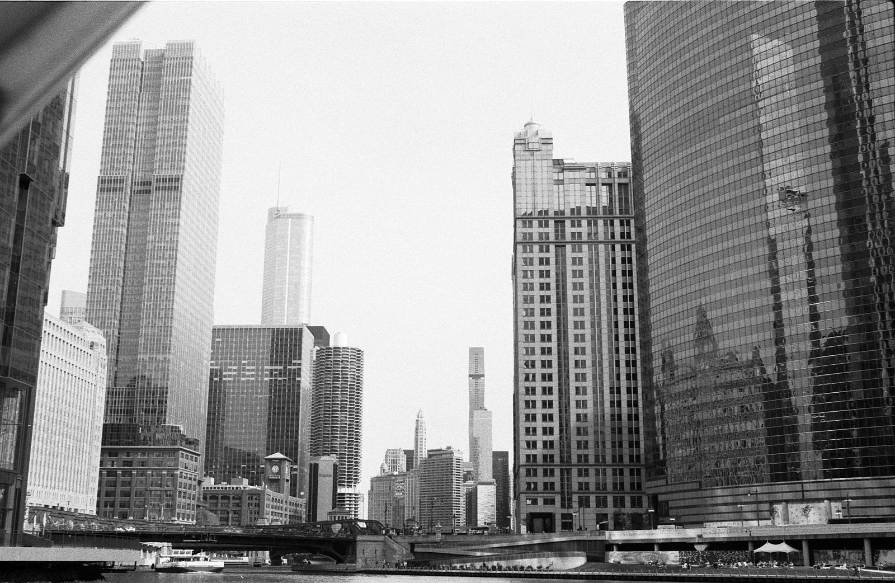

Currently / Envoy
Making the pieces fit.
Solutions engineering at Envoy: helping customers connect their systems, navigate technical tradeoffs, and turn business requirements into practical solutions.
The experience behind the workI’m Parker. I connect systems, build useful software, and spend time on the other side of a camera.
A few things I’m working on
Give your agents the web. A local-first CLI that turns public web pages into clean Markdown and structured JSON.
Explore Koris# Give your agents the web. $ npm install -g @parkervandyk/koris@next $ koris doctor
Solutions engineering at Envoy: helping customers connect their systems, navigate technical tradeoffs, and turn business requirements into practical solutions.
The experience behind the workFilm, digital, and the details worth slowing down for. A collection of what catches my eye.
I grew up in Dallas, studied Management Information Systems at the University of Alabama, and spent time in Atlanta and Nashville before putting down roots in Austin.
Outside of work, I’m usually running, occasionally cycling, shooting film, or spending time with my wife, daughter, and our two dogs.